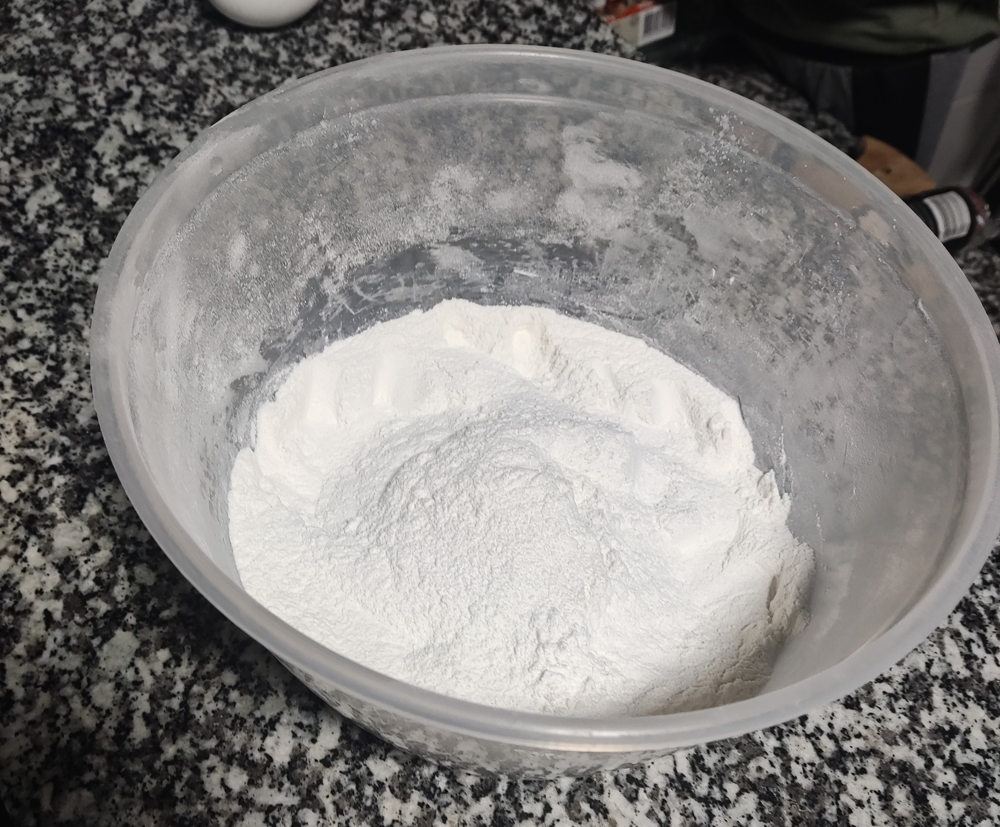
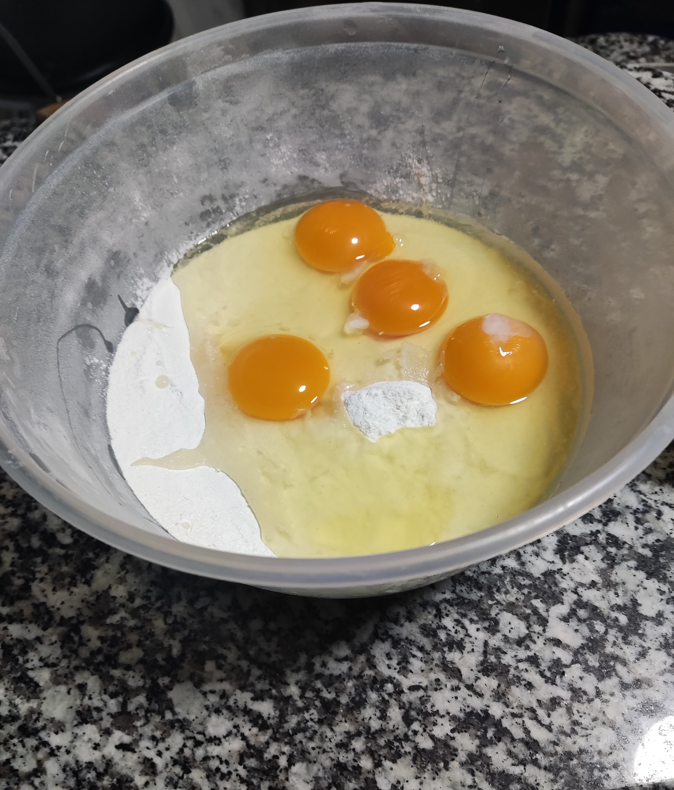
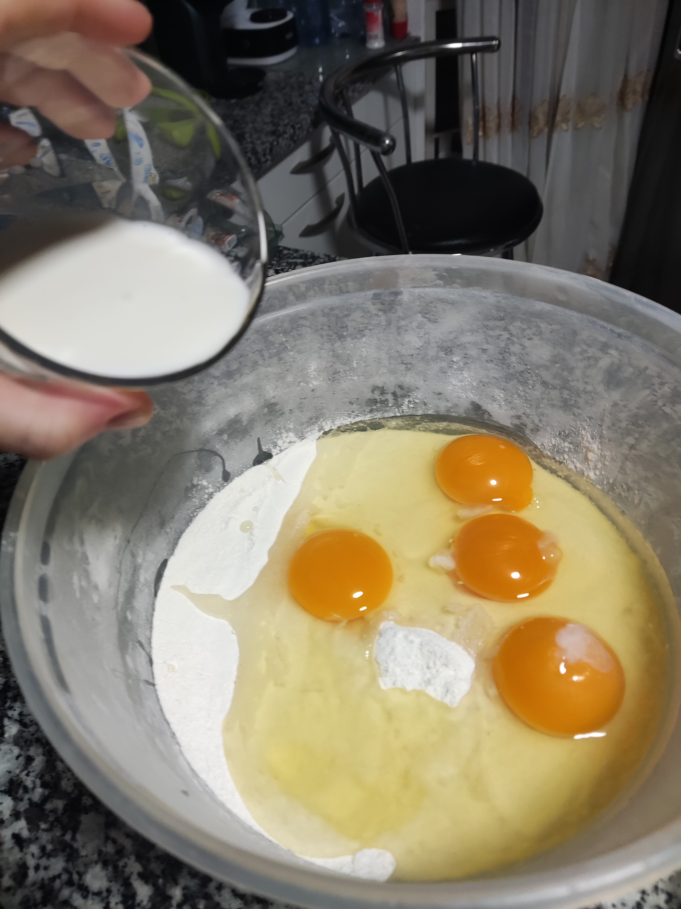
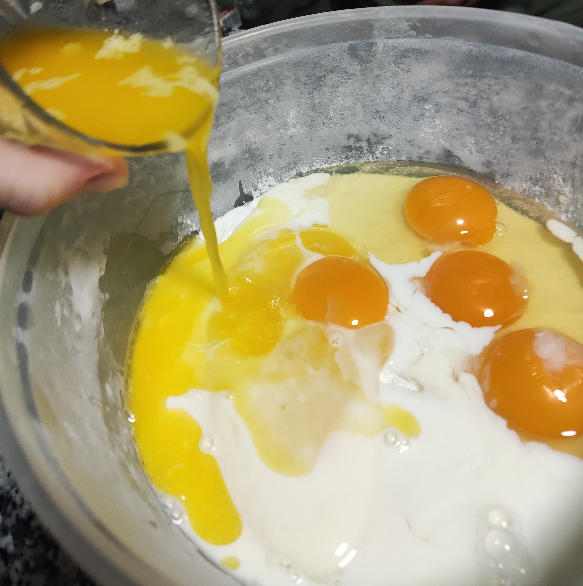
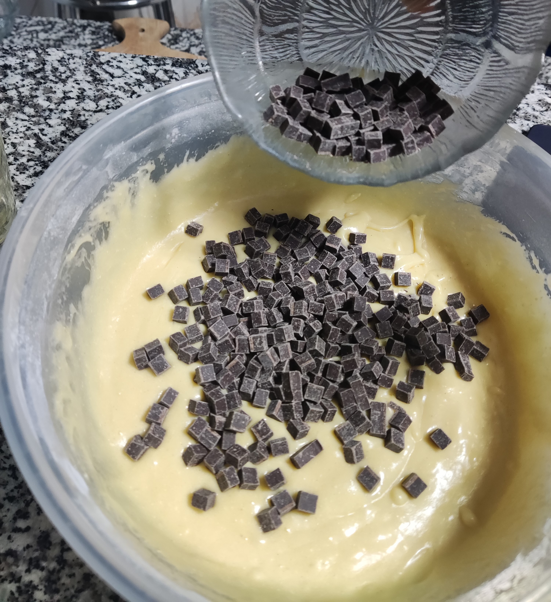
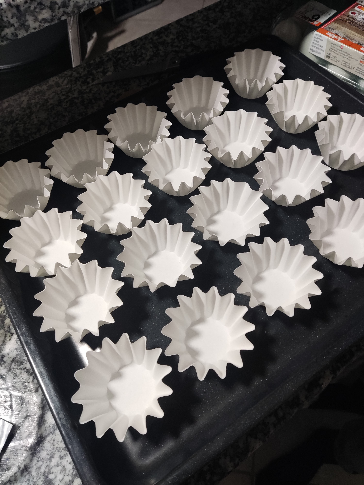
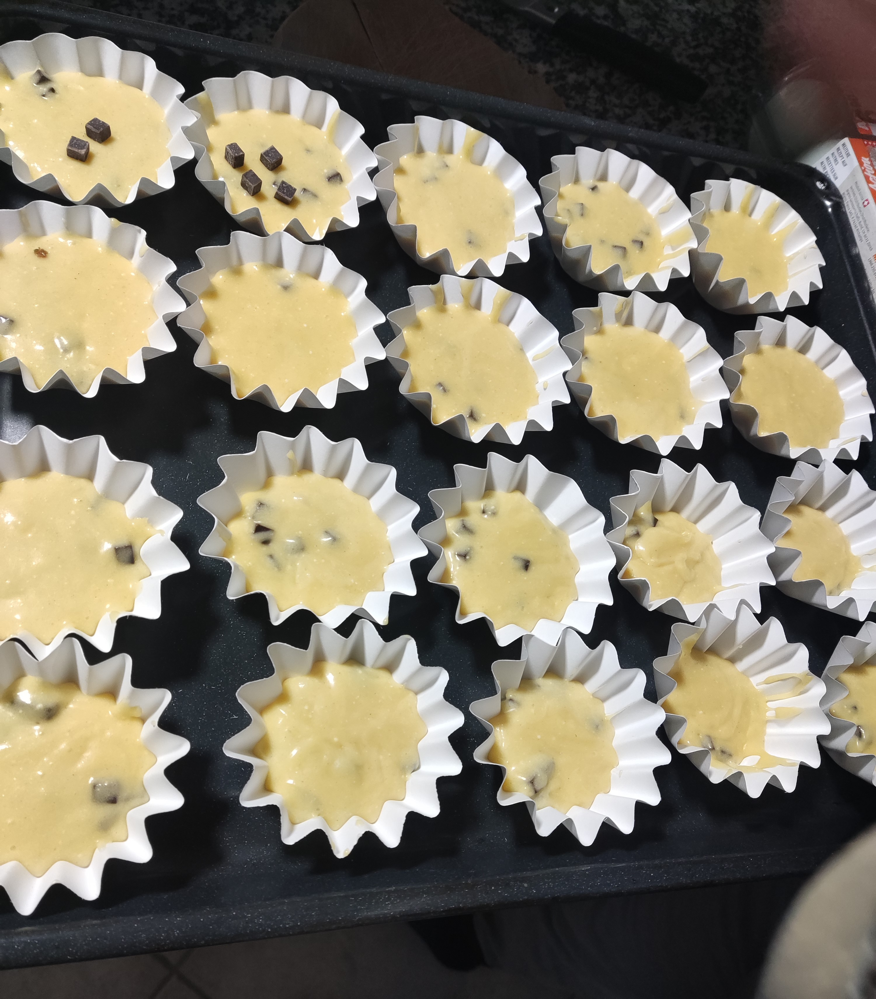

- 400g flour
- 4 eggs
- 2dl milk
- 2dl milk
- 150g sugar
- 100g butter
- 2 tee spoon backing powder
- 1 tee spoon salt
- 1 or 2 soup spoons of vanilla sugar
- 100g chocolate chips
1. First preheat the oven to 180 degrees
2. Mice en place
Make sure you have all the ingredients needed before you start baking. Prepare everything you need and put it on the table ready to use. You can measure the flour, sugar, butter etc in advance if you like.

3. Mix the solid ingredients
Put the flour, sugar, vanilla sugar, salt and yeast in a bowl and mix it together.
4. Melt the butter
5. Add the liquid ingredients
Add the eggs, melted butter and milk to the bowl.
  6. Mix the ingredients with a whisk or an electric mixer until the dough is homogeneous.

7. Add the chocolate chips and mix again.
8. Place the paper wrappers for the muffins on a sheet pan. Distribute the dough into the paper wrappers. You can use a spoon to help.
 9. Insert the sheet pan into the oven. Let it bake for 15-20min.